It is now possible to create forms that contain questions that must be answered at the time of booking an appointment. This provides you with an opportunity to make sure the information required for an appointment is captured during the booking process. Examples include capturing financial information such as PO numbers for the booking but can also be used to support administrative or marketing-related information gathering.
What is the purpose of the article?
The purpose of this article is to explain the process of creating and accessing Appointment Forms, which will provide you with Additional Booking Data.
This article is split into the following sections:
Creating appointment forms
Appointment Form Fields
Adding Questions
Adding Filters/Value
Setting an expression
Using Booking Questions
Accessing appointment forms from a Booked Appointment
Important notes
Enabling Additional Booking Data
To enable this feature, go to Admin > Configuration > System features and check Additional booking data.
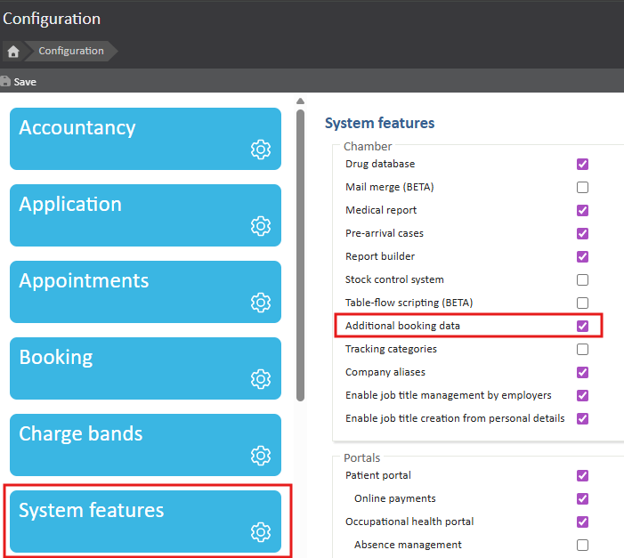
Creating Appointment Forms
To create your Additional Booking Data Questions, you must first create an Appointment Form. This form will provide the questions to be answered at the time of booking. These questions will then be viewed on the Appointment Home page, under Appointment Questions.
All Appointment forms are located within Admin > Common Catalogues > Appointment Forms.
These Appointment Forms will be the questions that populate on the booking screen.
To create a new Appointment Form we select + Add new or + New Appointment Form.
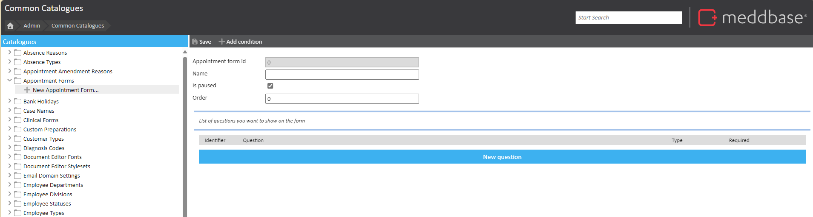
Appointment Form Fields
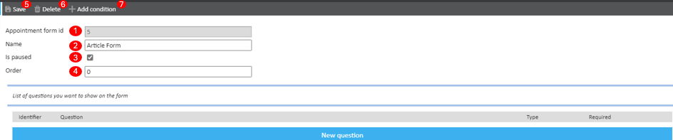
Appointment form ID: This is automatically defined by looking at the Last Appointment Form ID used.
Name: Set the name of your form. This is mandatory and can include special characters and numbers. The maximum length is 100 characters.
Is paused : We can pause forms if we no longer wish to use them. This is an option setting.
Order: This can be any number from 0, up to a maximum of 10 digits. If the order is left empty, the order is set to 0 by default. More than one form can be used for Booking Questions, so we use the order number to determine which form comes first. If more than one form share the same order number, the order is then determined by the Appointment Form ID ascending.
Save: Saves the form.
Delete: Deletes the form. This will only show once you save your form.
Add condition: Adds a new section to your form with more options; Add filter/value and Expression.
Remove condition: Removes any condition.
Adding questions
To add a question to your Appointment Form, click New Question.
You will be presented with a new window to configure your question. There are 7 settings:
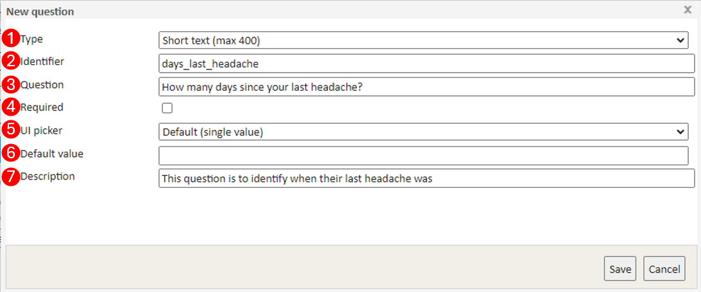
Type - There are 5 types of questions:
Boolean- Only 2 values are accepted : true or false.
Date and Time- This type only supports date formats in DD/MM/YYYY or YYYY/MM/DD.
Long text- Supports long text.
Number-Supports only numbers up to a maximum of 29 digits.
Short text - Supports a text to a maximum of 400 characters.
Identifier - This sets the variable for the question. Identifier cannot be empty, must start with a letter and allows only letters, numbers and underscore. This supports a max of 100 characters.
Question - This sets the question and how it will be displayed. Supports a max of 1000 characters
Required - Determines if the field is mandatory or not. Mandatory questions are identified with a red asterisk in the Booking Question screen and the user cannot proceed with booking the appointment if question is left unanswered.
UI picker - By default, this always picks Default (single value) where the end user will provide a typed answer. There are 2 other UI settings you can pick from, in which the end user will select a pre-defined answer.
Radio Buttons
Drop Down
Each question where the UP Picker is not Default (single value), will show an Options button. This button opens another window titled Edit variable options. This is used for radio buttons or dropdowns and allows the user to set any number of options.
Displayname: options that are visible for the user to pick. Anything can be typed here. This can be left empty. If left empty, we set Value as the name displayed.
Value: when a user picks an option in the Booking question screen from either a dropdown or a radio button, this needs to have a value. The value is what we define as answer in Activity.
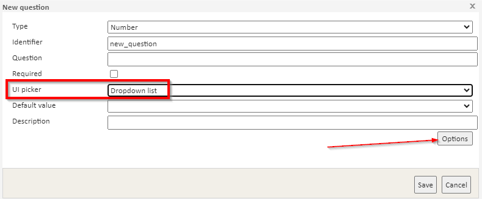
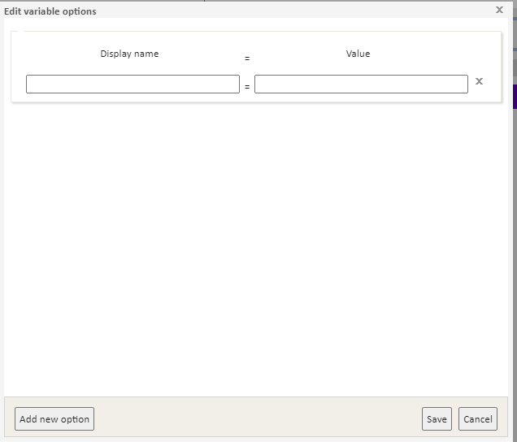
Default Value - This sets a default value to be populated in the answer box. Default values are optional and each question can have their own. When setting a default value, this looks at what Type is being used e.g. if using type Number, the default value needs also to be a number. Any default value can be deleted/overridden during the Booking question screen.
If question is set as Required and we have a Default value set, if no other information/option is added, this question will be considered answered.
Description - This provides a description of the question to the user. Information added here will be visible in both Booking Question screen and Appointment Home in Appointment Question's section.
Adding Filters/Value
Filters are only available where you have conditions specified. On some occasions, you may want to have specific questions show only for specific appointments or when certain conditions are met. When this is the case, we use the Add filter option to determine which conditions have to be met for specific forms to show.
A form can have any number of filters or conditions applied to it and we can select multiple events at once.
When no filters are used and if the form is not paused, every time we book an appointment, all the questions set on forms with the above description, will be displayed on the Booking Question's screen.
There are 5 ways to filter by:
Absence - this can be Aggregated absences or Bradford factor. Each filter option will have specific fields we can complete depending on what we want to filter on. This filter is used to check if patient has more, less or equal to X number of absences matching specific filters, then action this.
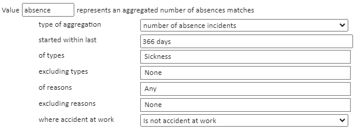
Value Name: Set the name of the filter. The value we want to use that represents an aggregated number of absences matches (for the example above using Aggregated absences) based on the filters we want to use. The variable is mandatory as we will need it to set up the expression.
Type of aggregation: We can pick from: number of absence incidents, number of days of absence or number of hours of absent.
Started within last: Absences that started within last year, month, etc. If instead (or as addition) of Aggregated absences we choose Bradford factor, the only filter we have is on Within last.
Of Types: The options to pick from here are set in Common Catalogues > Absence Types.
Excluding types: Same as the above, but types we would like to exclude.
Of Reasons : The options to pick from here are set in Common Catalogues > Absence Reasons.
Where accident at work: To choose the reason for absence was either due to accident at work or not.
Booking - we use this filter if we want a form to only show when specific appointment is booked or the opposite. In this filter we only have 2 fields:
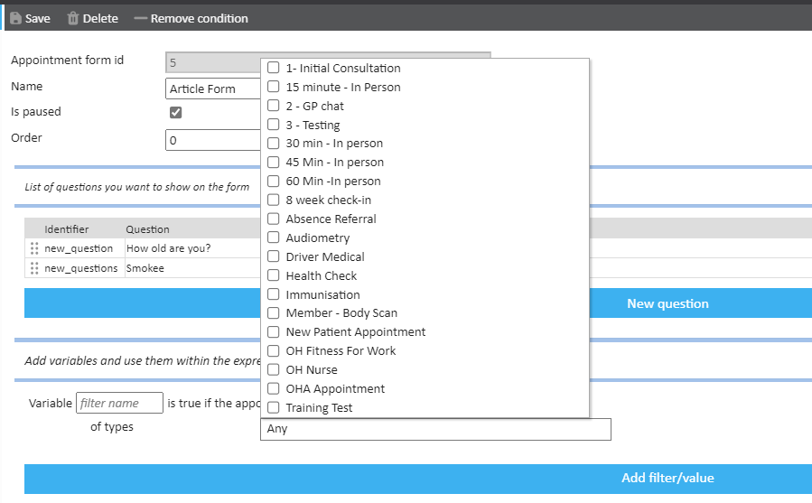
Variable filter name: Set the name of the filter. This is true if the appointment booking matches the below filter.
Of Types: Opens a list of all active appointment types in the chamber. We can tick which to apply to the filter.
Pathways - This filter is used to check if patient has more, less or equal to X number of pathways matching specific filters, then action this.
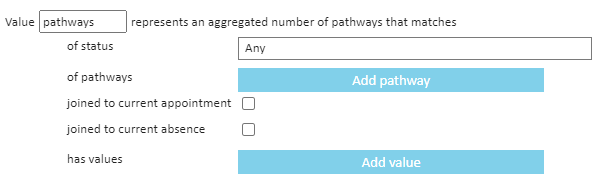
Value name: This sets the name of the filter. This is the value we want to use that represents and aggregated number of pathways that matches based on the filters we want to use. The variable is mandatory as we will need it to set up the expression.
Of status: this checks patient's pathways. We can select one or more options from Active, Completed and/or Closed.
Of Pathways: we can select a specific pathway or more than one or just don't select any and the filter will just check for any pathway that patient has.
Has Values: Provide a value identifier and set what it equals to.
Person
Variable filter name: Set the name of the filter. This variable will be true if the employer matches the below filter.
Of employers: allows picking one or more employers.
Of status: The status of a patient.
Your statuses may differ; however, the defaults available are:
Active
Deceased
Deleted
Of default payer: The default/preferred payer type set on the patient record.
The types are:
Employer
Insurance company
Legal
NHS Commissioner
Other Account
Patient
School
On default charge band: The default charge band the patient is on. You may need to search for a company to select the relevant charge band.
Of creator profile: The type of creator profile who created the patient record initially.
Referrals - These can be Aggregated incoming referrals or Aggregated outbound referrals. Each filter option will have specific fields we can complete depending on what we want to filter on. This filter is used to check if patient has more, less or equal to X number of referrals matching specific filters, then action this.
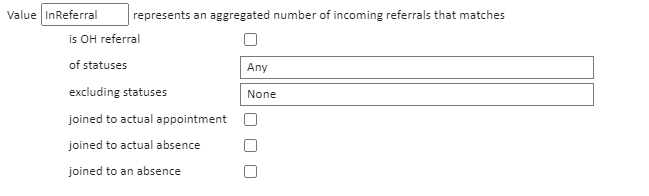
Value name: Set the name of the filter. The value we want to use that represents an aggregated number of incoming referrals matches (for the example above using Aggregated incoming referrals) based on the filters we want to use. The variable is mandatory as we will need it to set up the expression.
Is OH referral: We can tick the checkbox if we want to filter only on incoming referrals that are OH type.
Of statuses: We can pick one or more statuses from the list of options available.
Excluding statuses: Same as above but in this case to exclude referrals that are not of certain status(es).
Setting an Expression
Once the filters are set, an expression needs to be provided on how you want the filters to be applied. This expression determines the conditions for when the Appointment Form will apply. This is done by using the variables set when creating the Value name of the filter with AND/OR/NOT logic.
You can test your expression to ensure it is logically correct.
For example, using the variables from the screenshots above we could write an expression that checks if a patient had at least one number of absence incidents in the last 366 days of type Stress, anxiety, mental health, and we were booking Appointment B and patient has more than 2 Pathways and their employer is Test Employer Company and they have more than one incoming referral, then load questions from Appointment Form form. The expression would be:
absence > 0 AND appointment AND pathways > 2 AND InReferral > 1 AND employer
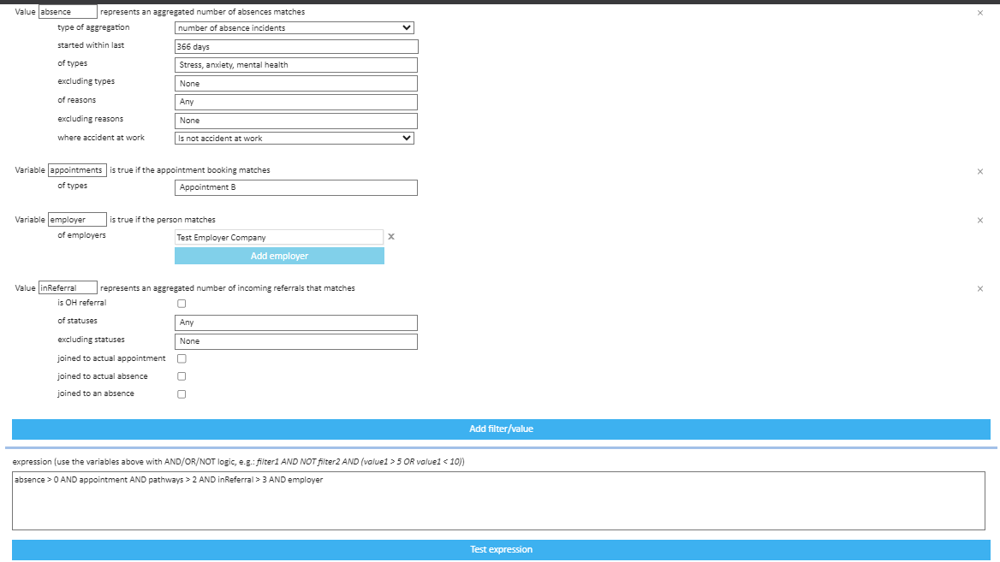
Once you have created your questions, added your filters/values and created an expression, you will need to save your form.
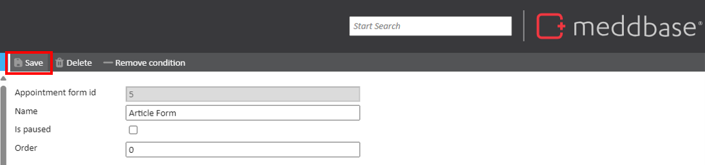
Using Booking Questions
When booking an appointment either via Slot Finder or Side by Side, if the appointment type and/or patient, matches any condition that triggers one or more Appointment Forms, the user will be presented with Booking questions on the final page of appointment booking.
Depending on whether the questions are required or not, will dictate if the appointment can be booked or if more information is required.
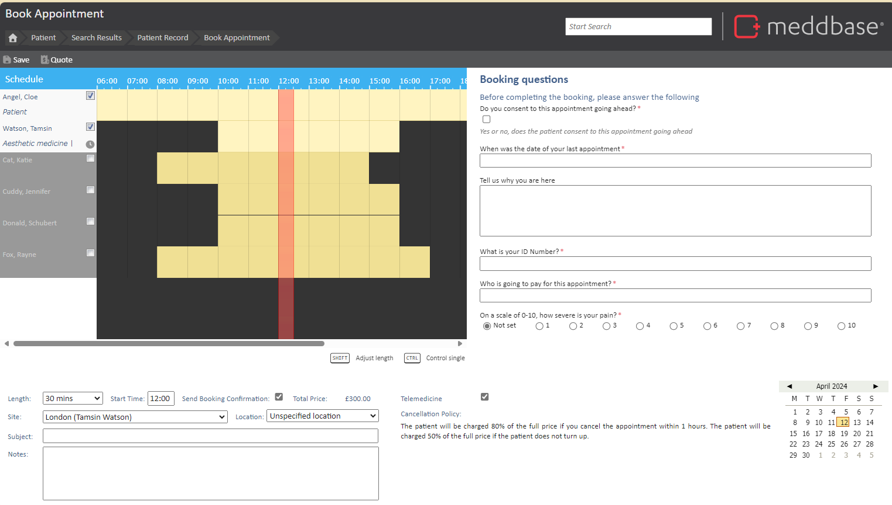
Viewing answered Appointment Questions
Once the booking questions have been provided and the appointment has been booked, with the answered Booking Questions, these are now populated within the Appointment Home Page.
The questions will show greyed out, which means these are read only and therefore can't be changed from the Appointment home page, however we can modify the answers when changing the date, time, attendees or notes of the appointment.
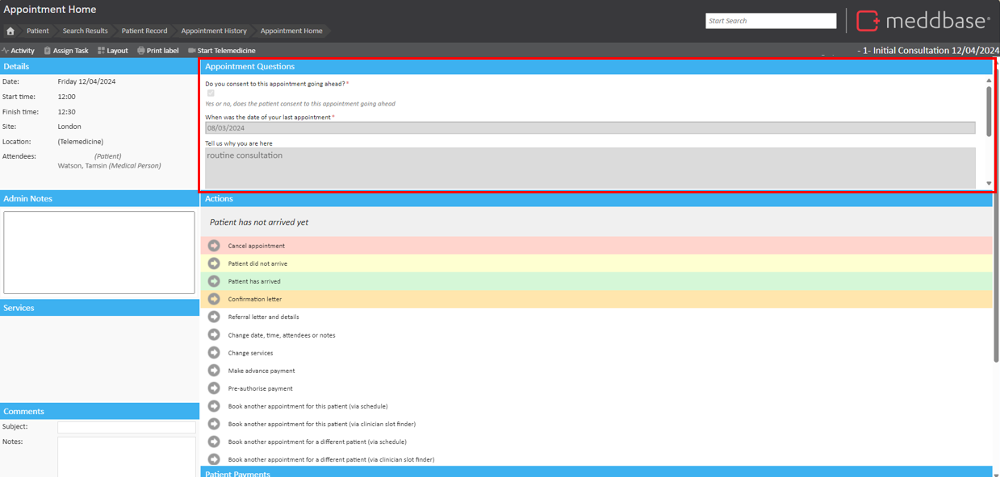
When selecting Change date, time, attendees or notes, you will be taken to the booking page where the questions will load again and answers can be amended, or alternatively if the appointment type is changed, new questions will show (or none if no conditions are met) and the previous answers will be marked as deleted and this is logged in Activity for auditing reasons.
When first setting up this Feature, the Appointment Questions section will need to be added to the Appointment Home layout.
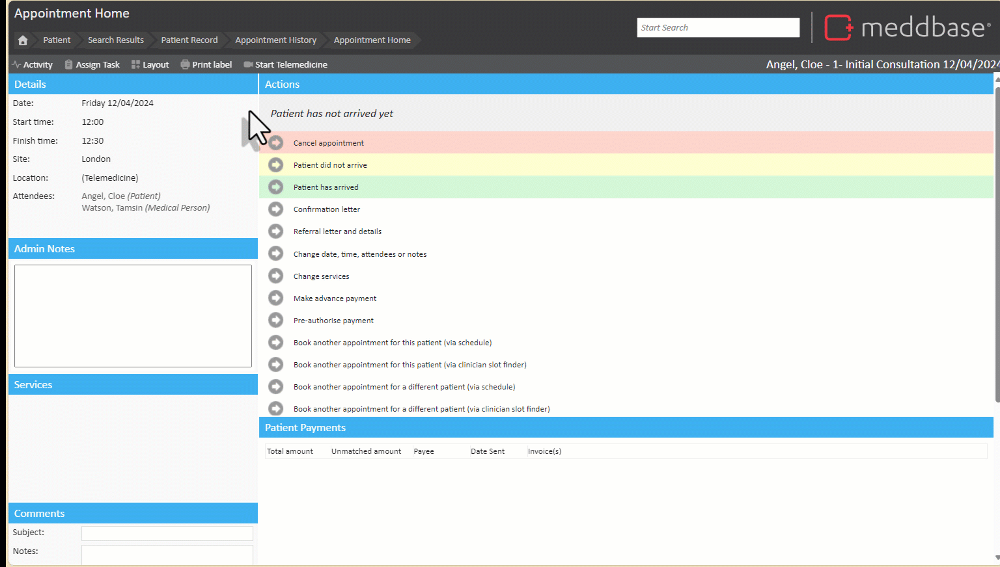
Important to note
If a form is paused, questions will not be displayed.
Answers are unique per appointment.
Forms with same order number, order of questions are ordered by form ID ascending.
If no filter is applied in Appointment Forms and if it's not paused, all questions for all Appointment Forms in the above conditions, will be visible for any appointment type booked.
Question's type cannot be changed once saved. The user will need to delete question and create a new one.
Not compatible with:
This is not compatible with Single page Slot finder.